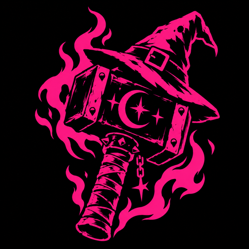

Hammered of Witches
Witch-finding advice from 1486, hammered into Discord.
Add to DiscordThe book
The Malleus Maleficarum, the "Hammer of Witches", is one of the most infamous books ever printed. Two inquisitors wrote it in 1486 as a manual for finding, trying and punishing witches, and it helped get a great many people, mostly women, killed.
It also reads like it was written by a drunk guy at three in the morning. Witches steal men's members and keep them in birds' nests, where they wriggle about eating oats. A witch can milk a knife stuck in the wall. If she can't cry on cue, she's guilty. A hailstorm takes a witch, a little water and a grudge.
And when he tried to take a big one, the witch said: You must not take that one; adding, because it belonged to a parish priest.
This bot quotes it, from Montague Summers' 1928 translation, with a link to each passage's page in the scanned book. It's for laughing at the Malleus, not with it.
Commands
/hammered: a random piece of advice, or/hammered about:milkfor one on a topic/accuse @someone: the Malleus's evidence that your friend is a witch/setup: what your server sees (needs Manage Server)/help: all of the above, in Discord
Your server, your taste
The book is soaked in misogyny, torture, antisemitism and worse. Rather than cut it for everyone, every passage
is tagged, and each server chooses what to keep: /setup lgbt level:off, /setup gore
level:mild, and so on, or a preset from Tame to Unabridged. You can keep the bird's-nest lore and lose the
bigotry. New servers start on a tasteful middle ground.
Want the full horror without inflicting it on everyone? /setup here gives one channel its own
rules: an Unabridged channel people can mute, while the rest of the server stays Tame.